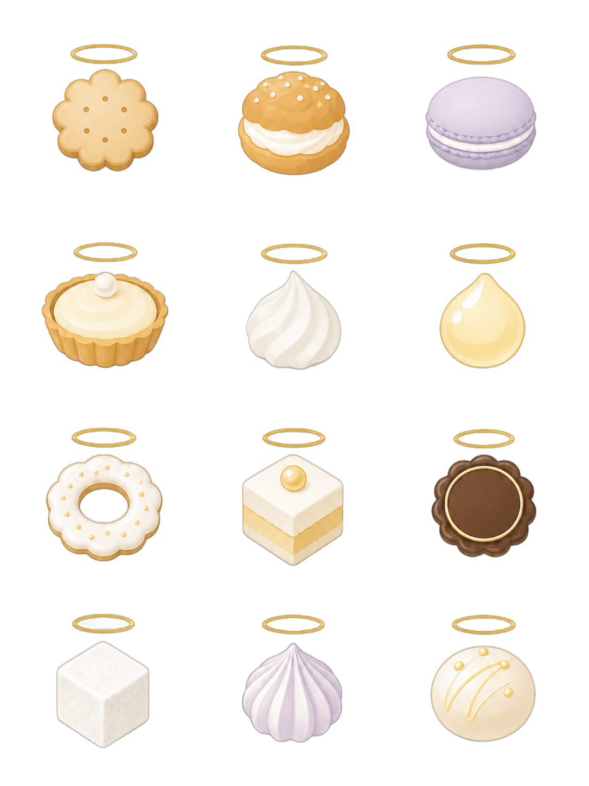
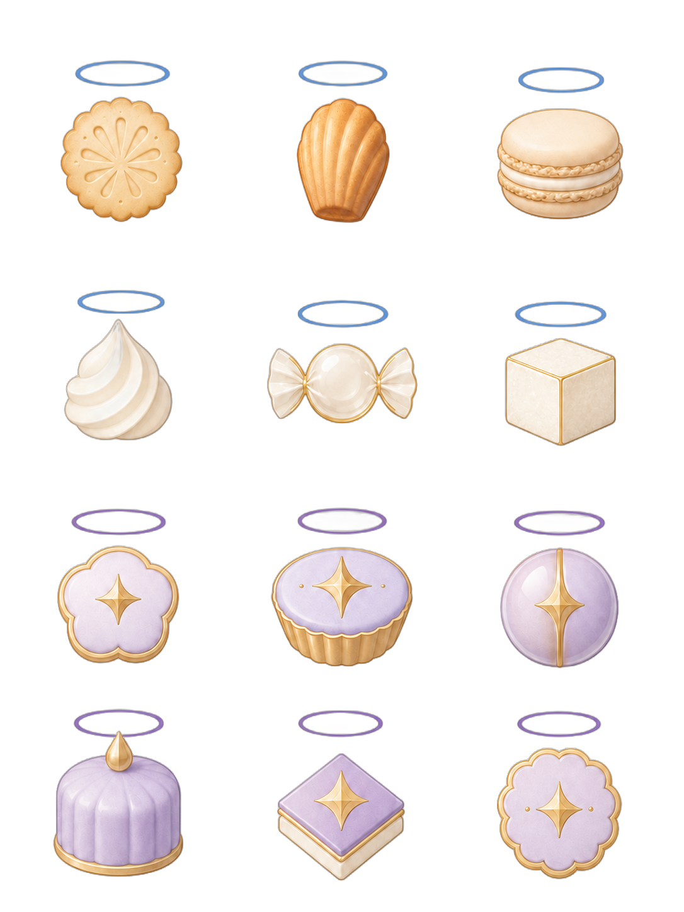
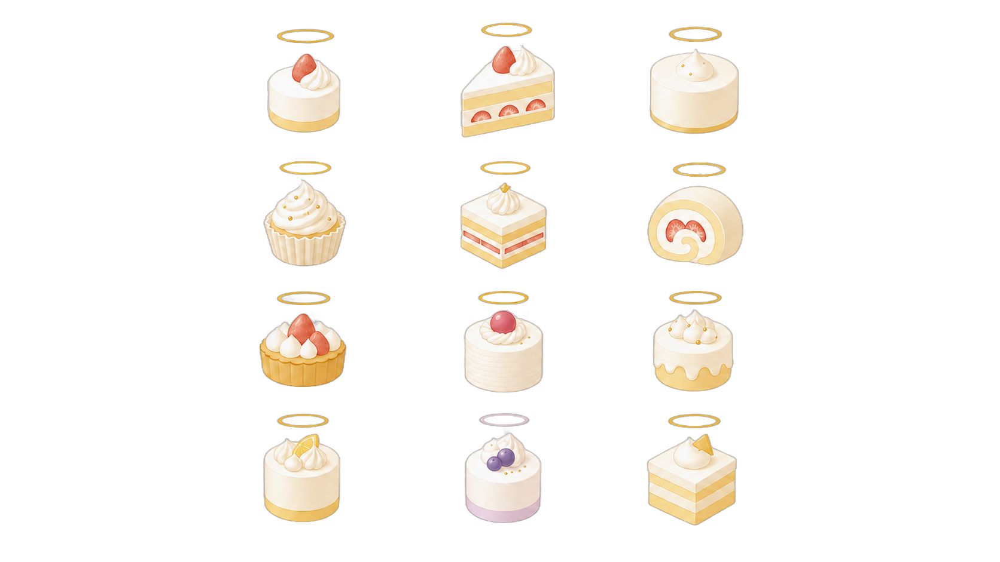
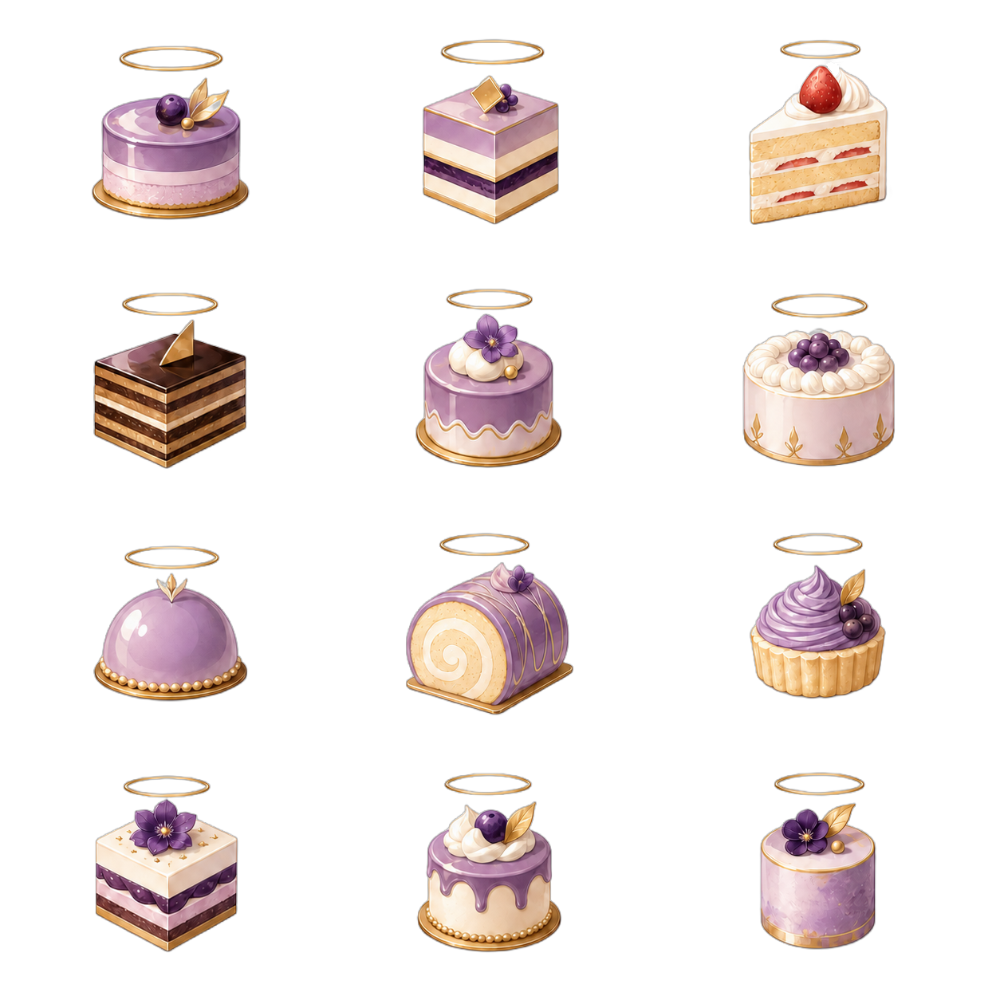

シンプル・マテリアル案
白、アイボリー、淡金を中心にした少色・少線の画像生成案。紫は一部候補だけに抑えている。

旧方針案
初期の画像生成方針で作った、少し装飾性と紫要素が強いロゴ候補。比較用として残す。

新方針ケーキ案 再生成版
数字と外枠が入った contact sheet からの切り出しではなく、1枚ずつ再生成した数字なし・外枠なし候補。白、アイボリー、淡金中心で、名刺ロゴに置いた時の清潔感を優先する。

旧方針ケーキ案
淡紫、金、装飾性を強めたケーキ候補。外周装飾が多いため、採用候補というより比較軸として見る。

追加ロゴ
サンプル名刺に近い、クッキーとケーキの追加ロゴ。